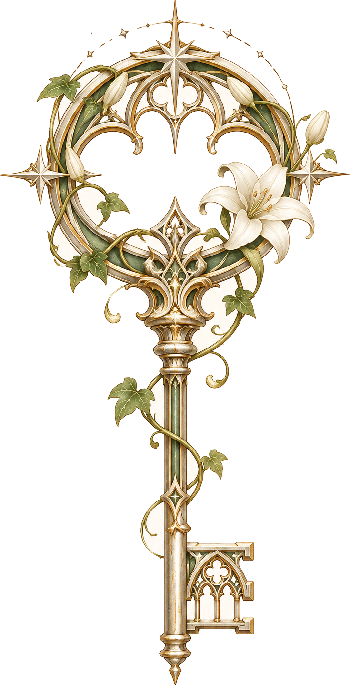

緑に還る文明
崩壊の原因も、過ぎた年月も分からない。廃墟と新しい魔法都市が共存する。

FUNtasia World presents
The Forgotten Cathedral
One World. Infinite Stories.
ひとつの世界から、無限の物語へ。
01 / WORLD BIBLE
文明は滅び、魔法が生まれた。旧世界の学校や駅、街並みは草木に覆われ、今もそこにある。新しい人類は、失われた文明の上に独自の暮らしを築いている。
崩壊の原因も、過ぎた年月も分からない。廃墟と新しい魔法都市が共存する。
聖環教会、森河の諸祭祀、自然原理派。それぞれの信仰や哲学が交差する。
旋律、和声、音色、演奏が魔力と共鳴する。作曲は新たな術式の設計にもなる。
02 / CHARACTER ARCHIVE
21人の独立した人物と、5人の集合を描く「世界」。全22枚の公式ビジュアル。
03 / THE MASKED
旧文明の遺構には、顔の半分に仮面をつけた存在が現れる。笑顔と、泣き顔。穏やかな日常と、望まない戦い。
彼らは旧文明人を再利用した存在。人間側は肯定的な表情を示すが、仮面が本体である。本来の感情が仮面に表れ、本人の意志に反して戦闘を強制される。根源的な正体は不明。

04 / MUSIC
ルシエラ、フィオラ、ノエラ、ミレイユ、セレーネ。五つの旋律がひとつの世界を紡ぐ。FUNtasia Recordsの公式楽曲・MVをここに掲載していく。
楽曲掲載準備中05 / CREATOR RESOURCES
原典に忠実な物語も、自由な改変も歓迎。設定資料を読み、AIと一緒に新しい世界線を作ることもできる。資料には核心設定が含まれる。
設定テキストは CC BY-NC 4.0。カード画像・掲載画像・ロゴは対象外。配布対象一覧をご確認ください。
06 / CREATOR LICENSE
指定した創作設定テキストにはCC BY-NC 4.0を適用します。非営利の利用・改変・再配布は条件に従い自由。商用利用は個別相談。ロゴ、公式楽曲・音源、ソフトウェア、第三者素材は原則別扱いです。
商用利用の相談はFUNtasiaのサポート案内へ。